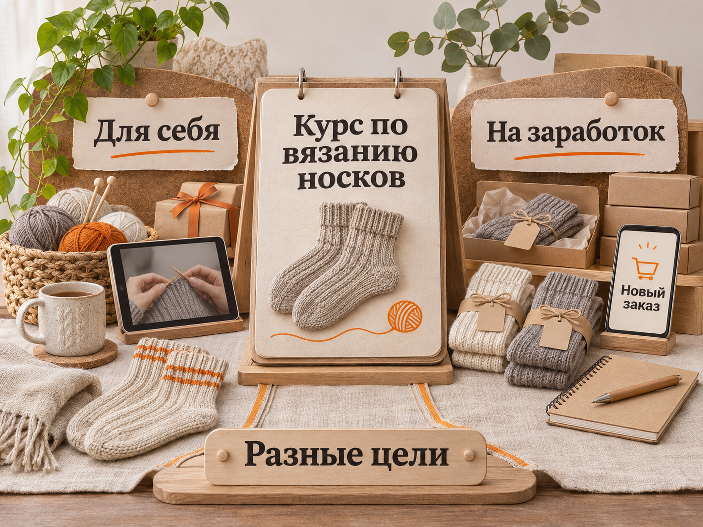
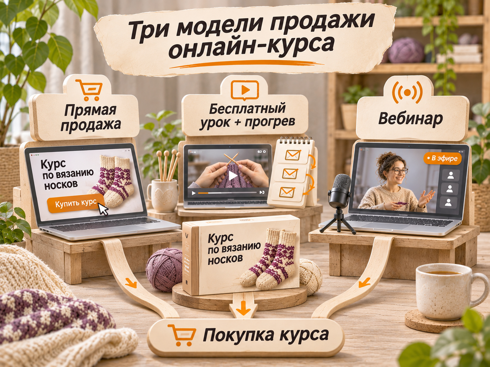

Блог о платном трафике
Как начать продавать свои онлайн-курсы с нуля
Чтобы начать продавать онлайн-курс, сначала определите, какой результат нужен ученику и кто готов за него платить. Затем проверьте спрос на конкретное предложение, проведите пробный урок или предпродажу и только после этого записывайте большую программу. Для первых продаж необязательно иметь онлайн-школу, дорогую платформу, десятки уроков и сложный автовебинар.
Разберём весь путь на примере человека, который умеет вязать носки и хочет обучать этому через интернет. Такая же последовательность подходит автору курсов по фотографии, рисованию, кондитерскому делу или другим практическим навыкам. Но аудитория, цена и способ продажи у каждой темы будут свои.
С чего начать, если вы хотите продавать свой курс
Предположим, у вас есть навык: вы умеете вязать удобные, красивые носки. Пока это ещё не образовательный продукт. Потенциальный покупатель должен понимать, чему именно научится, сможет ли повторить результат, сколько времени займёт обучение и что получит за свои деньги.
Первый рабочий вариант предложения: «Научитесь вязать свою первую пару носков спицами: от выбора пряжи до пятки и мыска». Это понятнее, чем «Авторский курс по вязанию». Человек видит конечную задачу и может решить, актуальна ли она для него.
На старте достаточно определить пять вещей:
- Кого учите. Новичков, людей с базовыми навыками или мастеров, которые хотят брать заказы.
- Какой результат обещаете. Например, связать первую пару носков по размеру. Не обещайте гарантированный доход, если обучение не может его обеспечить.
- Что входит. Несколько последовательных уроков, схемы, список материалов, ответы на вопросы, проверка работы.
- Как проходит обучение. Запись, занятия в группе, обратная связь в чате или индивидуальная работа.
- Как проверить оплату. Покажите людям предложение с ценой и условиями, а не только бесплатный опрос «Хотели бы вы такой курс?».
Здесь полезно разделить запуск на два решения: *есть ли спрос на обучение* и *можете ли вы прибыльно привлекать покупателей*. Первая продажа подтверждает готовность отдельного человека заплатить, но сама по себе ещё не доказывает, что платная реклама окупится.
Кому вы на самом деле продаёте курс
Один и тот же навык люди осваивают с разными целями. Для курса по вязанию носков минимум два заметных сегмента: те, кому интересно новое хобби, и те, кто хочет делать вещи на заказ. Продвигать их одним рекламным сообщением неудобно: покупатели оценивают разную пользу.

| Вопрос | Обучение для себя | Обучение ради заработка |
|---|---|---|
| Зачем покупают | Отдыхать, создавать вещи своими руками, дарить близким | Освоить изготовление изделий на заказ, попробовать продажи |
| Что важно в программе | Понятный старт, базовые петли, исправление ошибок, первая готовая пара | Повторяемое качество, расчёт себестоимости, ассортимент, сроки, работа с заказчиком |
| На что делать акцент в рекламе | «Свяжите первую пару даже без опыта» | «Научитесь рассчитывать себестоимость и выполнять заказы на вязаные изделия» |
| Главные сомнения | «Не получится», «сложно», «не хватит времени» | «Будут ли покупатели», «смогу ли сделать качественно», «окупятся ли материалы» |
| Чем подтвердить ценность | Пример урока и работы новичков | Примеры готовых изделий, процесс работы, честный расчёт затрат |
Важная деталь: если человек умеет обучать только технике вязания, курс автоматически не становится программой по заработку. Для второй аудитории нужны дополнительные темы: себестоимость, приём заказов, ценообразование, коммуникация с покупателями. Иначе обещание не совпадает с содержанием.
Не стоит заранее объявлять один сегмент «более платёжеспособным». Это гипотеза. Проверьте два варианта предложения: для любителей рукоделия и для тех, кто собирается брать заказы. Сравнивать нужно не количество лайков, а качество обращений, оплаты и возвраты.
Как проверить спрос до записи большого курса
Самая дорогая ошибка начинающего автора - несколько месяцев записывать полноценную программу до того, как кто-либо подтвердил готовность её купить. Проверка спроса не требует готовых двадцати часов видео. Она требует понятного предложения и нескольких последовательных проверок.
1. Изучить, что люди ищут и за что уже платят
Посмотрите поисковые запросы в Яндексе, предложения конкурентов, программы и форматы уроков. Для вязания это могут быть запросы «как связать пятку носка», «вязание носков для начинающих», «курс вязания носков спицами».
Записывайте не только формулировки запросов, но и задачу за ними. Человек, который ищет инструкцию по пятке, необязательно хочет большой платный курс. А пользователь, выбирающий обучение с обратной связью, уже ближе к покупке.
Наличие платных курсов у конкурентов подтверждает, что продукт такого типа существует на рынке. Оно не доказывает спрос именно на ваше предложение по вашей цене.
2. Поговорить с потенциальными учениками
Попросите нескольких людей из целевой аудитории рассказать о собственном опыте. Полезные вопросы: «На каком шаге у вас не получается?», «Что вы уже пробовали?», «Почему бросали обучение?», «Как поймёте, что курс помог?».
Не начинайте разговор с вопроса «Купили бы вы мой курс?». На него слишком легко ответить вежливым согласием. Лучше выяснить реальные затруднения, прошлые попытки, альтернативы и способы, которыми человек уже решает задачу. Десять разговоров помогут найти повторяющиеся проблемы, но не дадут репрезентативную оценку ёмкости рынка.
3. Показать пробное предложение с ценой
Составьте короткую страницу или пост: кто обучается, какой получит результат, из чего состоит программа, сколько стоит участие, когда старт и как задавать вопросы. Для проверки можно предложить платный мини-урок либо предпродажу будущего курса с честно указанной датой начала и условиями возврата.
Самый убедительный сигнал - состоявшаяся оплата, а не просмотр страницы, лайк, комментарий или регистрация на бесплатный урок. При этом и несколько оплат ещё не гарантируют масштабируемый спрос: посмотрите, кто купил, откуда пришёл и сколько стоило привлечение.
Например, на иллюстрации к этому разделу показаны условные цены других предложений 2990, 3490 и 4200 ₽, а также 426 лайков и 87 комментариев. Это демонстрационные числа, не результаты исследования конкурентов и не данные реального запуска. Они нужны, чтобы подчеркнуть: интерес к теме и фактические платежи измеряют разные вещи.
Как решить, продолжать ли запуск
Если люди интересуются уроком, но не платят, разберитесь, что именно мешает: непонятный результат, неподходящая цена, отсутствие доверия, неудобный формат или слишком широкая тема. Поменяйте один из этих элементов и повторите проверку. Если покупки есть, уточните, что помогло принять решение, и переходите к созданию минимальной программы.
Как упаковать первый курс
Ученик покупает понятный результат и условия, при которых сможет к нему прийти. Поэтому программа должна идти от итоговой работы к необходимым навыкам, а не от желания автора рассказать всё, что знает.
Для первого курса по вязанию носков возможна такая логика: выбор пряжи и спиц, набор петель, вязание голенища, формирование пятки, мысок, проверка размера и исправление типичных ошибок. Дополнительные узоры и сложные техники можно оставить для следующего продукта.
Для каждого урока продумайте практическое действие. После просмотра ученик должен сделать конкретную часть изделия. Если это обучение новичков, особенно полезны крупные планы рук, схемы, замедленные фрагменты и возможность задать вопрос.
Формат и цена. На старте проще провести небольшой поток с обратной связью, чем записать огромную библиотеку. После первого набора станут понятны трудные места, вопросы учеников и необходимая длительность уроков. Цену выбирайте по объёму поддержки, альтернативам на рынке, себестоимости и готовности аудитории платить, а не по универсальному «среднему чеку онлайн-курса».
Оффер. Покажите образец результата, программу, преподавателя, формат доступа, необходимые материалы, полную цену и условия возврата. Если места в группе ограничены количеством проверяемых работ, объясните это. Не придумывайте дефицит или отзывы ради конверсии.
Где разместить курс и как принимать оплату
Первым ученикам важнее удобный доступ к занятиям и своевременная обратная связь, чем сложность платформы. Небольшую программу можно организовать через сервис с доступом к урокам или готовую площадку для продажи курсов. Для первой группы допустим и более простой формат с закрытым пространством для материалов, если обеспечены доступ, поддержка и надлежащая обработка оплат.
У инфраструктуры есть несколько обязательных задач: принять заказ и оплату, выдать подтверждение и доступ, сохранить сведения об участнике, организовать уроки и обратную связь, обработать запрос на возврат. До приёма денег нужно обозначить условия оказания услуги и порядок возврата.
Отдельно проверьте юридическую модель. В России самозанятый может применять НПД при соблюдении установленных ограничений: доход не более 2,4 млн ₽ в год и отсутствие наёмных работников. При этом он обязан формировать чек через «Мой налог». Для ИП и организаций правила применения онлайн-кассы зависят от режима и предусмотренных законом исключений.
Лицензирование тоже зависит от того, кто и как обучает. По статье 91 закона № 273-ФЗ ИП, который непосредственно ведёт образовательную деятельность сам, не входит в число соискателей образовательной лицензии. Когда появляются другие преподаватели, условия меняются. До запуска проверьте применимость этих норм к своей программе и форме работы. Не забывайте об обработке персональных данных и требованиях к рекламе.
Как получить первых учеников
Начните с тех каналов, в которых уже можно встретить людей с нужной задачей. Выбор рекламной площадки зависит от сформированности спроса и от того, какой первый шаг предлагает курс.
Своя аудитория. Если вы уже показываете работы в соцсетях, публикуете уроки или общаетесь в тематическом сообществе, предложите людям пробное занятие. Лучше показать готовую пару носков, фрагмент обучения и результаты учеников, чем просто сообщить «Открываю набор».
Тематические сообщества и партнёрства. Полезная демонстрация в сообществе рукодельниц или совместный урок с автором тематического канала может привести заинтересованных людей. Условия публикации, рекламную маркировку и возможность размещения согласуйте заранее.
Яндекс Директ. Поиск подходит, когда пользователи уже вводят запросы о платном обучении. Для узких творческих тем прямого коммерческого спроса может быть мало, поэтому дополнительно проверяют охватные форматы и рекламные сети. В них особенно важно показывать результат обучения и оценивать качество регистраций, а не только цену клика. Подробную настройку лучше вынести в отдельные материалы: «Настройка рекламы онлайн-школы» и «Яндекс Директ для онлайн-школы».
VK и Telegram. Эти площадки могут работать через собственный контент, тематические сообщества, посевы и доступные рекламные инструменты. Не нужно одновременно запускать все варианты. Начните с источника, где понятна аудитория и можно проследить путь до оплаты.
Для оценки рекламы заранее настройте учёт источника заявки и оплаты: UTM-метки, события на сайте, учёт регистраций, таблицу или CRM с фактическими продажами и возвратами. Если продаёте после вебинара или переписки, деньги могут поступить не в день рекламного перехода. Без связки с продажей дешёвая регистрация ничего не говорит об эффективности.
Какая воронка подойдёт на старте
Воронка - это путь, который проходит покупатель от первого знакомства с курсом до оплаты. Начинающему автору не обязательно строить автовебинар. Удобнее выбирать модель по сложности продукта и количеству вопросов перед покупкой.
| Модель | Как работает | Когда выбирать | Ограничение |
|---|---|---|---|
| Прямая продажа | Человек видит программу, цену и оплачивает курс | Понятный небольшой продукт, уже сформированный спрос, тёплая аудитория | Холодный покупатель может не доверять автору |
| Бесплатный урок + прогрев | После полезного занятия человек получает примеры, ответы на сомнения и предложение курса | Когда нужно сначала показать метод обучения и первые результаты | Бесплатные регистрации не равны продажам |
| Вебинар или автовебинар | Регистрация, демонстрационное занятие, ответы на вопросы, предложение основной программы | Продукт требует подробного объяснения, есть достаточный поток заинтересованных людей | Производство и автоматизация требуют времени и расходов |

Прямая продажа
Для небольшого практического курса иногда достаточно демонстрации результата, программы, цены и простой страницы оплаты. Человек уже хочет связать носки, понимает формат и готов купить. Тогда дополнительные этапы лишь усложнят путь.
Бесплатный урок и последующие сообщения
Например, бесплатное занятие объясняет, как подобрать спицы, пряжу и выполнить первые ряды. После урока участнику показывают программу полного курса, примеры готовых работ и дают возможность задать вопрос. Напоминания и рассылка должны помогать принять решение, а не повторять одинаковый рекламный текст.
В кейсе по обучению плетению из бумажной лозы использовался бесплатный мастер-класс, за которым следовала продажа платного курса. Такой вход особенно понятен в творческих нишах: человек может попробовать технику до покупки полной программы.
Вебинарная и автовебинарная воронка
Живой вебинар полезен, если ученикам нужно увидеть технику, задать вопросы и понять, подходит ли им преподаватель. Автовебинар - запись такого занятия с автоматической регистрацией и последующими сообщениями. В записи нельзя создавать ложное впечатление прямого эфира или присутствующих участников.
Автоматизировать стоит уже проверенную последовательность: когда известно, что люди приходят на урок, понимают предложение и покупают. Если пока не было продаж, автовебинар добавляет технические затраты, но не решает проблему слабого продукта.
У онлайн-фотошколы из моего кейса работала другая модель: регистрация на бесплатный видеоурок, затем серия писем и продажа платного обучения. Это пример масштабирования существующей воронки, а не доказательство того, что новичку обязательно нужна такая система.
Как посчитать экономику первого запуска
Главная ошибка в расчётах - делить рекламный бюджет на регистрации и считать результатом только красивую цену лида. Человеку, который продаёт обучение, нужны стоимость покупателя, выручка, затраты на проведение курса и возвраты.
Рассмотрим условный пример, показанный на иллюстрации «Экономика первого запуска». Это не прогноз рынка и не данные конкретной школы.
| Показатель | Допущение и расчёт |
|---|---|
| Регистрации на бесплатный урок | 100 человек |
| Цена регистрации | 300 ₽ |
| Рекламный бюджет | 100 × 300 = 30 000 ₽ |
| Оплаты курса | 5 человек |
| Конверсия из регистрации в оплату | 5 / 100 = 5% |
| Цена курса | 6000 ₽ |
| Выручка | 5 × 6000 = 30 000 ₽ |
| Стоимость покупателя (CAC только по рекламе) | 30 000 / 5 = 6000 ₽ |
| Выручка / рекламные расходы (ROAS) | 30 000 / 30 000 = 1,0 |
Здесь выручка равна расходам на рекламу, поэтому на иллюстрации подразумевается нулевая окупаемость именно рекламного бюджета. Это не точка безубыточности бизнеса: ещё остаются налоги, комиссии платёжных сервисов, стоимость обучения, поддержка и возможные возвраты. Реальный финансовый результат в таком примере будет отрицательным.
Для планирования полезно считать допустимую цену регистрации от экономики покупки. Формула:
Допустимая цена регистрации = допустимая стоимость покупателя × конверсия регистрации в оплату.
Если после учёта затрат вы можете потратить на привлечение одного платящего ученика не больше 2500 ₽, а ожидаемая конверсия из регистрации в покупку - 5%, предельная цена регистрации составит 125 ₽. Эти числа тоже являются расчётным допущением, не средними показателями рынка.
Если продажи происходят через вебинар, дополнительно фиксируйте доходимость: сколько зарегистрировалось, сколько реально присутствовало и сколько из присутствовавших купило. При этом итоговую конверсию для бюджета считайте по всем регистрациям, а не только по самым активным зрителям.
Реальные примеры запуска и продвижения онлайн-курсов
Данные чужих кейсов полезны, если понимать, *какой этап воронки* был измерен. В одной публикации автор получает регистрации на бесплатное занятие, в другой - заявки на покупку, в третьей - фактическую выручку. Сравнивать их CPL как один показатель нельзя.
| Проект и дата публикации | Что известно из опубликованных данных | Практический вывод |
|---|---|---|
| Школа свечеварения, «Ниагара Таргет», март 2026 | За декабрь 2025 - январь 2026: расходы на VK Ads около 506 тыс. ₽, 1482 регистрации, цена регистрации 341,4 ₽. Тестировались сообщения о хобби и заработке | Два мотива покупки можно проверять разными рекламными объявлениями. Регистрации не показывают число продаж |
| Онлайн-школа маникюра, Yudena Agency, март 2026 | Агентство сообщает о 1005 лидах и 54 заявках на покупку после работы с VK, контентом и автоворонкой | Заявка на бесплатный материал и заявка на покупку - разные этапы; оплаченные заказы в кейсе отдельно не раскрыты |
| Школа AI-видеопродакшена, ROCK & ROMI, апрель 2026 | За три запуска заявлены 9020 регистраций, около 2,74 млн ₽ расходов и 11,6 млн ₽ выручки. Вместо традиционного вебинара использовали мини-курс с заданиями | Практическое знакомство с обучением может служить прогревом. Высокий чек и масштаб проекта несопоставимы с первым курсом по хобби |
| Сергей Камянецкий, история на Хабре, ноябрь 2025 | Автор начал с курса на Stepik без собственной рекламной аудитории. По его словам, в мае 2024 получил около 20 тыс. ₽, в июне после изменения цены - почти 90 тыс. ₽ | Готовая площадка и ограниченный первый продукт могут стать началом. Цифры относятся к 2024 году, а не к 2025-2026 |
В кейсе школы маникюра опубликованные расходы и заявленная средняя цена лида расходятся при простом пересчёте. Поэтому спорную стоимость лида здесь не используем. Для школы свечеварения значение 341,4 ₽ подтверждается отношением опубликованного бюджета к числу регистраций. Все показатели отражают отдельные проекты, а не средние нормы стоимости привлечения по рынку.
Собственные примеры: творческие курсы и обучение через бесплатный урок
В кейсе по лозоплетению за отчётный период получено 1673 регистрации на бесплатный мастер-класс и 81 оплата платного курса. Конверсия из регистрации в покупку составила 4,84%, выручка по данным клиента - 754 900 ₽. Это данные более ранней рекламной кампании, опубликованной в 2023 году и впоследствии обновлённой на сайте. Их нельзя выдавать за текущую среднерыночную цену клиента в 2026 году.
Фотошкола использовала бесплатный видеоурок и email-последовательность для продажи программ. При масштабировании удалось получать около 2500 регистраций в месяц по 126 ₽, но этот результат относится к апрелю - июню 2022 года. В кейсе измеряется именно цена регистрации, а не стоимость оплаты курса.
Есть и отдельный кейс вебинарной воронки для кондитеров. Он полезен для сравнения механики бесплатного занятия и последующей продажи. Его показатели следует смотреть в самом кейсе, не перенося на новый запуск без проверки условий.
Практический смысл этих примеров не в попытке найти универсальную «цену ученика». Они показывают, что творческие навыки можно продавать разным аудиториям и через разные форматы, а результат рекламы зависит от последующих оплат.
Пошаговый план первого запуска на четыре недели
Это пример последовательности, а не обещание получить продажи за определённый срок. Если тема сложная или преподаватель ещё не подготовил практический формат, отдельные этапы займут больше времени.
Первая неделя: аудитория и оффер. Выберите одну понятную задачу, сформулируйте результат обучения, изучите предложения конкурентов, поговорите с потенциальными учениками. Не объединяйте в одном оффере новичков «для себя» и людей, которые хотят строить бизнес на изделиях.
Вторая неделя: проверка спроса. Соберите небольшую страницу или пост с программой, ценой, условиями и датой начала. Предложите пробный урок либо честную предпродажу. Записывайте вопросы, возражения, источники обращений и факты оплаты. Если предложение не работает, исправляйте его до записи большой программы.
Третья неделя: минимальный курс. Подготовьте только необходимые занятия, инструкции и проверку результата. Настройте оплату, выдачу доступа, поддержку и правила возврата. Проведите первые занятия или подготовьте старт группы в согласованный срок.
Четвёртая неделя: анализ и следующий набор. Сопоставьте расходы, регистрации, оплаты, возвраты и вопросы учеников. Узнайте, что мешало пройти обучение. На основе этих данных уточните программу и решите, можно ли расширять рекламу без ухудшения экономики.
Начинающему автору полезнее получить несколько честных оплат и понять, почему люди купили, чем построить сложную автоматическую систему с сотнями бесплатных регистраций и нулём продаж. После проверки продукта уже имеет смысл отдельно рассчитывать рекламный бюджет, тестировать каналы и автоматизировать рабочую воронку.